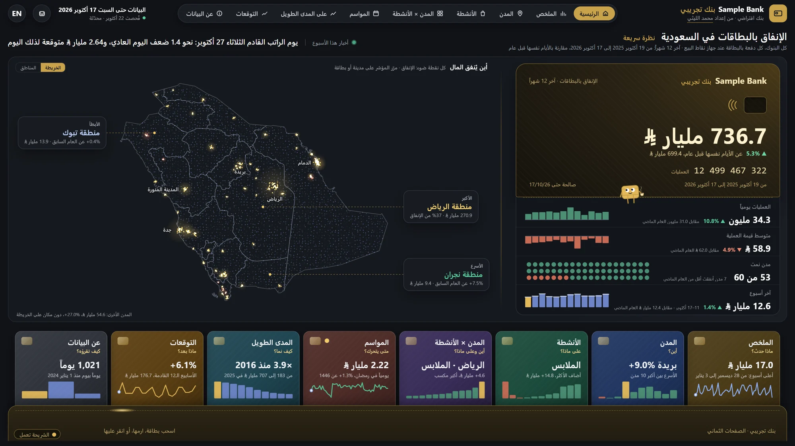
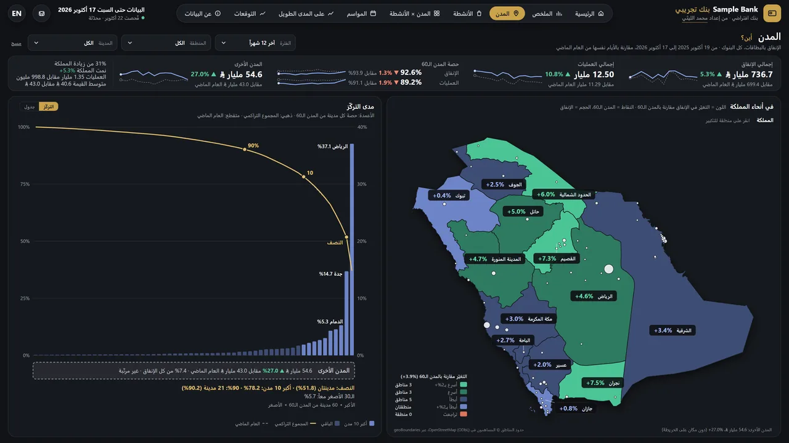
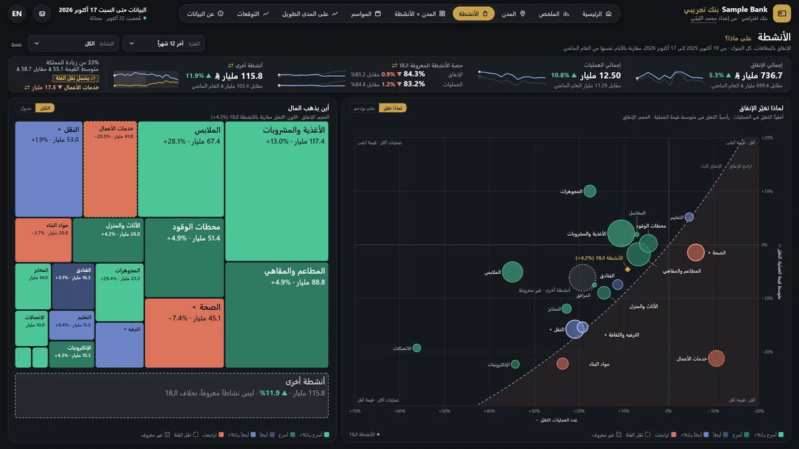
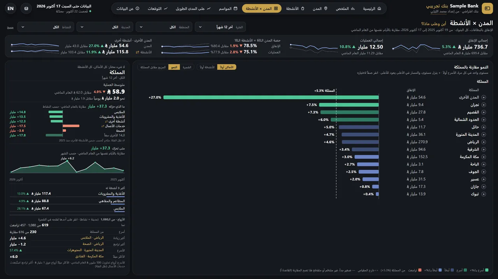
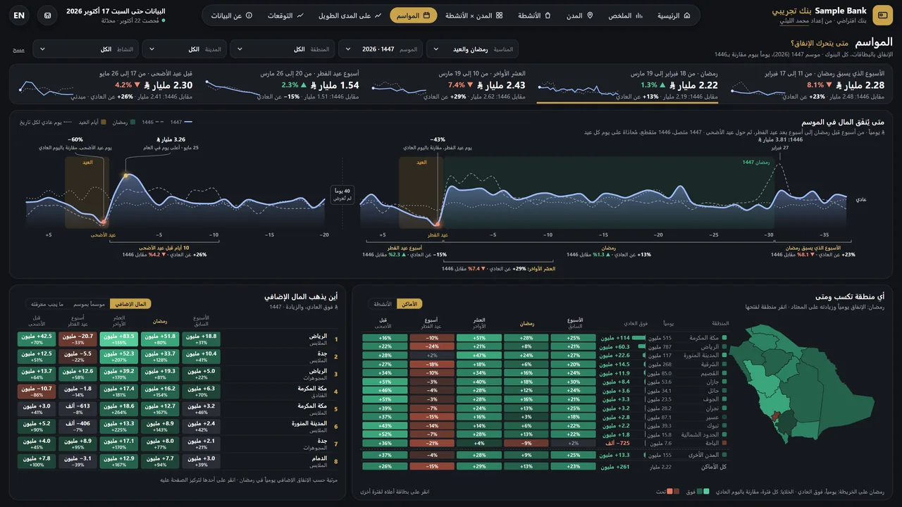
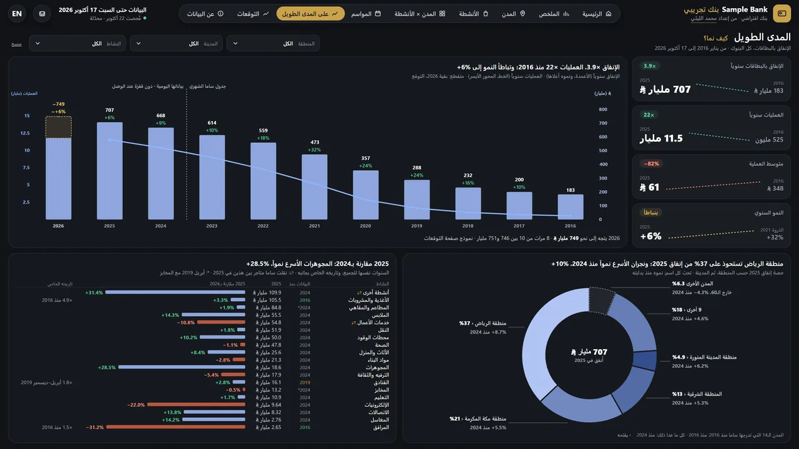
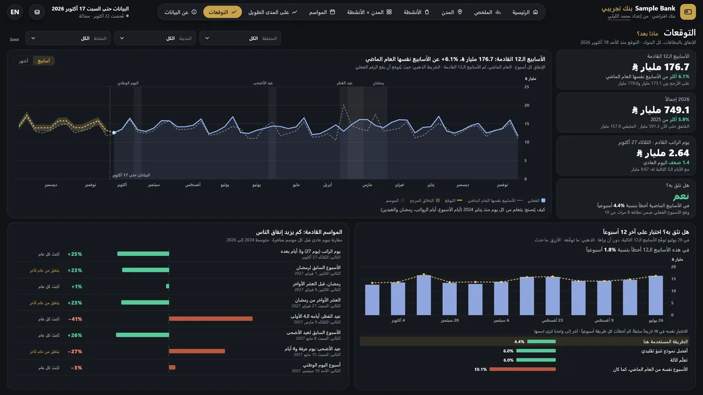
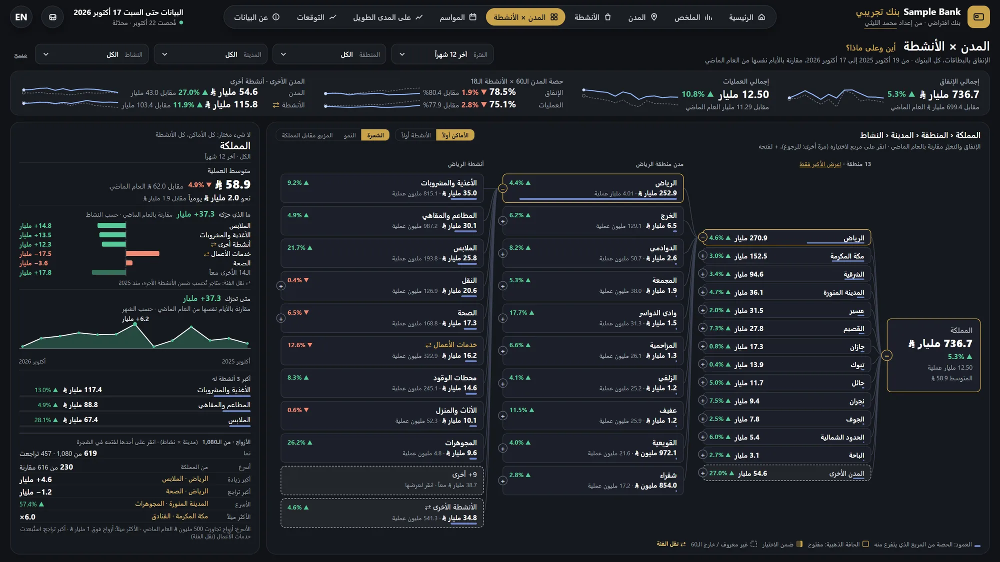

إنفاق البطاقات في السعودية
٣٫٩ مليون رقم يومي، مطابَقة مع تقارير ساما، في لوحة واحدة بلغتين
ينشر البنك المركزي السعودي بيانات الإنفاق بالبطاقات في ثلاثة أشكال منفصلة، ولم يكن هناك مكان واحد يبين ماذا أُنفق وأين وعلى ماذا يومًا بيوم.
مسار بيانات يجمعها كلها ويطابقها أسبوعًا بأسبوع مع تقارير ساما نفسها، وفوقه لوحة بيانات بالعربية والإنجليزية.
٣٫٩ مليون رقم يومي، و٩٬٨١٦ من ٩٬٨٣٦ رقمًا أسبوعيًا للمدن تساوي تقارير ساما.
المباشرة
عن البيانات. كل رسم في هذه الصفحة مرسوم من أرقام ساما الحقيقية المنشورة، وصور اللوحة لقطات من صفحتها العامة المنشورة.
النتيجة
من ٩٬٨٣٦ رقمًا أسبوعيًا للمدن تساوي تقارير ساما في حدود التقريب
فيه الفروق العشرون كلها: من ٢٤ إلى ٣٠ مارس ٢٠٢٤، إذ ينقص التقرير نحو نصف يوم السبت ٣٠ مارس
نمو الإنفاق بالبطاقات في ٥٢ أسبوعًا حتى ١٧ أكتوبر ٢٠٢٦: ٧٣٦٫٧ مليار ريال
ريال على الأغذية والمشروبات يوم الجمعة ٢٨ فبراير ٢٠٢٥، قبل رمضان بيوم: أعلى يوم لأي نشاط في ١٬٠٢١ يومًا
ما هي
خط البيانات والفحوص ونموذج البيانات ولوحة بالعربية والإنجليزية تُظهر أين يدفع الناس في السعودية بالبطاقة عبر أجهزة نقاط البيع، وعلى ماذا، وفي أي أيام، منذ ٢٠٢٤.
السؤال
ينشر البنك المركزي السعودي (ساما) الإنفاق بالبطاقات في ثلاث صور لا تلتقي: تقرير أسبوعي بصيغة PDF منذ ٢٠٢٠، وجدول شهري يعود إلى ٢٠١٦، ومنذ ٢٠٢٤ جدول يومي على بوابته لا يعطي إلا خمس مدن في كل طلب. والجدول الأسبوعي العام يقسم الإنفاق حسب المدينة أو حسب النشاط، لا الاثنين معًا.
فلم يكن ممكنًا أن ترى أين يدفع الناس في السعودية بالبطاقة، وعلى ماذا، وفي أي أيام، دون جمع ذلك كله والتحقّق من أن أجزاءه تتفق. واللوحة لكل من يحتاج هذه الصورة، من متجر يختار مدينته التالية إلى فريق البطاقات في بنك.
ماذا تفعل
تسع صفحات، تجيب كل منها عن سؤال واحد. كل رسم فيها يُنقر ليصفّي الباقي، وكل صفحة تُقرأ بالعربية والإنجليزية. وهذه ثمانية مشاهد من الصفحة المنشورة:








كيف تعمل
- ٠١جمعت البيانات كلها ٣١٥ تقريرًا أسبوعيًا منذ يونيو ٢٠٢٠، والجدول الشهري من ٢٠١٦ إلى ٢٠٢٣، والبيانات اليومية منذ ١ يناير ٢٠٢٤: ٣٬٩٢٤٬٧٢٤ رقمًا لا خانة فارغة فيها، سُحبت من استمارة البوابة خمس مدن وشهرًا واحدًا في كل مرة.
- ٠٢حوّلت التقارير إلى جدول واحد جدول أسبوعي واحد من التقارير الـ٣١٥، عليه ٤٦ فحصًا بلغة SQL.
- ٠٣جعلت المصدرين يلتقيان جمعت الأيام في أسابيع من الأحد إلى السبت، وقارنتها بالتقارير لكل مدينة: ٩٬٨١٦ من ٩٬٨٣٦ رقمًا أسبوعيًا متطابقة في حدود التقريب.
- ٠٤بنيت النموذج والتحديث نموذج نجمي في DuckDB، وأمر واحد يعيد كل خطوة ويتوقف إن فشل أي فحص.
- ٠٥بنيت اللوحة أولًا في Power BI بلغة DAX، ثم صفحة ويب على النموذج نفسه: تسع صفحات بالعربية والإنجليزية، كل رسم فيها قابل للنقر، والصفحات العربية من اليمين إلى اليسار بالكامل.
نموذج البيانات
نموذج Power BI الذي تقوم عليه اللوحة، مرسومًا من ملف النموذج نفسه: عشرة جداول تربطها إحدى عشرة علاقة، بالمفاتيح وحدها. وتُركت الجداول المساعدة غير المرتبطة بعلاقات (التسميات والفحوص وأدوات التصفية).
- city_keyمفتاح
- city, city_ar
- region, region_ar
- largest10
- activity_keyمفتاح
- activity, activity_ar
- parent_key
- activity_19_key
- cell_keyمفتاح
- City, Region
- Activity
- date_key← dim_date
- city_key← dim_city
- activity_key← dim_activity
- cell_key← City activity
- payments, value_sar
- week_key← dim_date
- city_key← dim_city
- activity_key← dim_activity
- payments, value_sar, days
- cell_key← City activity
- saturday_key
- show_growth
- date_keyمفتاح
- day, week_start, month
- hijri_year, ramadan_day
- is_gov_payday
- week_key← dim_date
- long_key← dim_long_series
- payments, value_sar
- month_key← dim_date
- payments, value_sar
- long_keyمفتاح
- long_series, kind
مستوى التفصيل
صف واحد لكل يوم ومكان ونشاط تجاري: ٦١ مكانًا (المدن الستون المدرجة و«خارج الستين») في ٢٧ نشاطًا فرعيًا، مع عدد عمليات الدفع وقيمتها بالريال. وكل إجمالي هو مجموع هذه الصفوف.
الإجماليات للفحص لا للجمع
إجماليات ساما المطبوعة نفسها، للمملكة ولكل مدينة وللأنشطة الأم الثلاثة، محفوظة في جدول منفصل، والفحوص تثبت أن الصفوف التفصيلية تعيد بناء كل واحد منها.
الأسبوع من الأحد إلى السبت
وهو أسبوع تقارير ساما نفسه، حتى تلتقي البيانات اليومية والتقارير الأسبوعية عند كل مدينة وكل نشاط.
الأسبوع من ٢٤ إلى ٣٠ مارس ٢٠٢٤ هو الأسبوع الوحيد الذي يختلف فيه المصدران: ينقص تقرير ساما الأسبوعي نحو نصف يوم السبت ٣٠ مارس في كل سلسلة. وتُستخدم هناك البيانات اليومية، واللوحة تذكر ذلك.
كل يوم، كل نشاط
كل خط نشاط، وكل نقطة يوم من يناير ٢٠٢٤ إلى أكتوبر ٢٠٢٦، وارتفاعها إنفاق ذلك اليوم. أكثر الفترات إنفاقًا تأتي قبل رمضان والعيد. مرّر المؤشر على خط لتقرأ اليوم.
كيف تحقّقت
كل رقم في اللوحة يجب أن يتفق مع ساما ومع قاعدة البيانات التي خلفها. وأول فحص هو الذي تراه أدناه: إصدارا ساما، أحدهما مقابل الآخر، لكل مدينة وكل أسبوع.
- في حدود التقريب (التقرير يقرّب الأرقام إلى أقرب ألف)
- مختلف: ٢٤ إلى ٣٠ مارس ٢٠٢٤
٩٬٨٣٦ رقمًا أسبوعيًا للمدن من ٧ يناير ٢٠٢٤ إلى ١٧ أكتوبر ٢٠٢٦، عددًا وقيمة: ٩٬٨١٦ منها على خط الصفر في حدود التقريب، والعشرون الباقية هي المدن العشر في أسبوع ٢٤ إلى ٣٠ مارس ٢٠٢٤، ينقص كلٌّ منها في التقرير بين ٦٫٦٪ و٨٫٢٪.
كل نقطة أسبوع مدينة واحدة، عددًا أو قيمة: الفرق بين التقرير ومجموع أيام البوابة، نسبةً إلى الأسبوع. عشر مدن حتى يونيو ٢٠٢٥، ثم المدن الستون والباقي، كما يسردها التقرير.
- البيانات اليومية، مجموعةً في أسابيع، تساوي تقارير ساما الأسبوعية لكل مدينة في حدود التقريب: ٩٬٨١٦ من ٩٬٨٣٦ رقمًا أسبوعيًا. والعشرون الباقية هي المدن العشر في أسبوع واحد، ينقص كلٌّ منها في التقرير بين ٦٫٦٪ و٨٫٢٪.
- في كل يوم، مجموع الأنشطة يساوي الإجمالي، ومجموع المدن يساوي المملكة.
- أرقام كل صفحة تُقارن بلغة SQL مع قاعدة البيانات عند عدة تواريخ نهاية للبيانات.
- يُجرَّب كل اختيار في التصفية، ويجب أن تُكشف الأخطاء المزروعة عمدًا.
- تُقاس كل صفحة بحثًا عن نص فوق نص، وكلمات مقطوعة، وإنجليزية متروكة في العربية، على ثلاثة أحجام شاشة.
ما الذي سأغيّره لو بدأت من جديد
كنت سأجعل التحديث الأسبوعي يعمل وحده منذ البداية. اليوم يسحب أمر واحد الأسبوع الجديد ويعيد بناء النموذج ويشغّل كل الفحوص، لكنه ما زال يُشغَّل يدويًا.
الأدوات والروابط
- Python
- pandas
- requests
- SQL
- DuckDB
- Power BI
- DAX
- JavaScript
- SVG
المستودع العام يضم صفحة اللوحة فقط. أما الكود والبيانات وملفات Power BI فخاصة، ويمكنني شرحها في المقابلة. البيانات: بوابة البيانات المفتوحة للبنك المركزي السعودي (ساما).